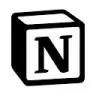
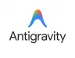
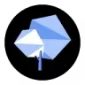
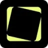

MidjourneyAI-персонажи
Midjourney создаёт изображения по описанию и референсам. Подходит для поиска художественного направления, иллюстраций и визуальных концепций перед детальной доработкой.
Нейросети: Проверьте один рабочий запрос с вашими материалами. Сравните точность, контекст и возможность проверить результат.
Начните с одного конкретного результата: текста, изображения или разбора документа. Навигация Молекулы помогает найти нужный раздел; условия доступности функции проверьте в своём кабинете.
Мне нужен понятный ответ клиенту по условиям доставки из предоставленного документа. Помоги сформулировать задание модели и перечень проверок ответа. Недостающие условия оставь открытыми.

Midjourney создаёт изображения по описанию и референсам. Подходит для поиска художественного направления, иллюстраций и визуальных концепций перед детальной доработкой.

Notion AI работает с материалами рабочего пространства: помогает искать сведения, редактировать страницы и заполнять базы. Полезен для сбора статуса проекта и подготовки документов на основе доступных знаний.

OmniSets относится к инструментам, которые помогают готовить учебный материал и объяснения. Ещё одно направление работы: составлять задания и карточки для повторения.
Open Notebook организует исследование выбранных материалов в рабочем пространстве. Выводы следует проверять в контексте документов, которые были добавлены к задаче.

В инструменте «Phot.AI» можно менять фотографии с учётом выбранного оформления. Ещё одно направление работы: готовить материалы о товарах и услугах.
QuillBot объединяет инструменты переработки текста, корректуры, сокращения и перевода. Для редактирования начните с одного абзаца и отметьте факты, которые нельзя менять: новая формулировка должна сохранить условия, а не только отличаться словами.
Sogni AI Sticker Bot используют, чтобы получать изображения из словесного задания. Ещё одно направление работы: собирать видео с цифровым ведущим.

В инструменте «SuperAGI» можно связывать действия в автоматизированный процесс. Ещё одно направление работы: готовить ответы на обращения клиентов.

Tensor.art рассчитан на задачи, где нужно получать изображения из словесного задания. Ещё одно направление работы: собирать видео с цифровым ведущим.
Amazon Rekognition подключают к приложениям для анализа визуальных данных. Система возвращает сведения об изображении или видеоматериале, которые затем используются в логике продукта.

Antigravity 2.0 рассчитан на задачи, где нужно создавать и уточнять визуальный макет.

Google Whisk используют, чтобы получать изображения из словесного задания. Ещё одно направление работы: менять фотографии с учётом выбранного оформления.

В инструменте «GravityWrite» можно готовить текст по теме и требованиям к содержанию. Ещё одно направление работы: получать изображения из словесного задания.
В инструменте «Magica» можно связывать действия в автоматизированный процесс. Ещё одно направление работы: собирать видео с цифровым ведущим.

В инструменте «Spot AI» можно собирать видеосцену по описанию или визуальному исходнику. Ещё одно направление работы: выполнять задачи с веб-страницами.
Story Generator используют, чтобы собирать видеосцену по описанию или визуальному исходнику. Ещё одно направление работы: готовить текст по теме и требованиям к содержанию.

В инструменте «Wonder AI» можно получать изображения из словесного задания. Ещё одно направление работы: собирать видео с цифровым ведущим.
Writerly рассчитан на задачи, где нужно готовить текст по теме и требованиям к содержанию. Ещё одно направление работы: редактировать уже написанный материал.

AI21 Labs рассчитан на задачи, где нужно готовить текст по теме и требованиям к содержанию. Ещё одно направление работы: редактировать уже написанный материал.
Craiyon используют, чтобы получать изображения из словесного задания. Ещё одно направление работы: собирать видео с цифровым ведущим.
В инструменте «Keras» можно писать и изменять программный код. Ещё одно направление работы: получать изображения из словесного задания.

Leonardo.Ai помогает создавать, редактировать и анимировать изображения. Полезен для визуальных концепций, персонажей и материалов, которые затем доводят до рабочего макета.
Matrix Ai используют для задачи: собирать видео с цифровым ведущим. Ещё одно направление работы: работать с заданным образом ИИ-персонажа.

Paperpal используют для задачи: подготавливать письма и сценарии переписки. Ещё одно направление работы: редактировать уже написанный материал.
Picsart используют, чтобы собирать видеосцену по описанию или визуальному исходнику. Ещё одно направление работы: менять фотографии с учётом выбранного оформления.
В инструменте «Tenorshare AI» можно собирать слайды из материала по теме. Ещё одно направление работы: сокращать материал до основных положений.

TextFX предлагает экспериментальные способы работы со словами и идеями. Его результаты можно использовать как материал для авторской доработки текста.
Verifact.it относится к инструментам, которые помогают собирать видеосцену по описанию или визуальному исходнику. Ещё одно направление работы: сокращать материал до основных положений.

Wordware используют, чтобы связывать действия в автоматизированный процесс. Ещё одно направление работы: организовывать материалы и поиск по ним.
Yomu AI используют для задачи: подготавливать письма и сценарии переписки. Ещё одно направление работы: сокращать материал до основных положений.

Autoblogging.ai относится к инструментам, которые помогают готовить текст по теме и требованиям к содержанию. Ещё одно направление работы: редактировать уже написанный материал.

В инструменте «BlueWillow» можно получать изображения из словесного задания. Ещё одно направление работы: готовить материалы о товарах и услугах.

ChatGPT помогает писать и редактировать тексты, разбирать документы и таблицы, обсуждать код. Поиск, анализ данных и работа с изображениями дополняют чат, когда доступны в выбранном аккаунте.

Gencraft используют, чтобы получать изображения из словесного задания. Ещё одно направление работы: менять фотографии с учётом выбранного оформления.

HubSpot Breeze AI Assistant используют, чтобы исследовать тему и разбирать найденную информацию. Ещё одно направление работы: готовить ответы на обращения клиентов.

Koala AI относится к инструментам, которые помогают редактировать уже написанный материал. Ещё одно направление работы: готовить текст по теме и требованиям к содержанию.

Lumo используют для задачи: готовить ответы на обращения клиентов. Ещё одно направление работы: собирать видео с цифровым ведущим.

В инструменте «Mistral AI» можно связывать действия в автоматизированный процесс. Ещё одно направление работы: готовить текст по теме и требованиям к содержанию.

Mujo AI используют, чтобы собирать видео с цифровым ведущим. Ещё одно направление работы: работать с заданным образом ИИ-персонажа.

NVIDIA Studio используют для задачи: готовить трёхмерный объект для проекта. Ещё одно направление работы: собирать видеосцену по описанию или визуальному исходнику.

Resemble AI относится к инструментам, которые помогают работать с синтезированной голосовой партией. Ещё одно направление работы: подготавливать озвучку текстового материала.

Stammer AI рассчитан на задачи, где нужно связывать действия в автоматизированный процесс. Ещё одно направление работы: готовить ответы на обращения клиентов.

Udio создаёт музыкальный материал по описанию стиля, настроения и темы. Для рабочего использования важно прослушать структуру, проверить слова и уточнить доступный способ публикации.

You.com предоставляет поиск и извлечение веб-материалов через API для ИИ-приложений. Разные интерфейсы возвращают результаты поиска, содержание страниц или ответ с источниками для дальнейшей обработки.

Articly.ai используют, чтобы редактировать уже написанный материал. Ещё одно направление работы: готовить текст по теме и требованиям к содержанию.
Beam AI рассчитан на задачи, где нужно связывать действия в автоматизированный процесс. Ещё одно направление работы: подготавливать аналитические материалы для рабочих решений.
Black Forest Labs разрабатывает модели FLUX для визуальной генерации. Для практической работы нужно выбрать подходящую модель и способ её использования.

Civitai объединяет материалы сообщества для визуальной генерации. Перед применением в проекте стоит изучить назначение модели и условия использования результата.
Страница 3 из 4